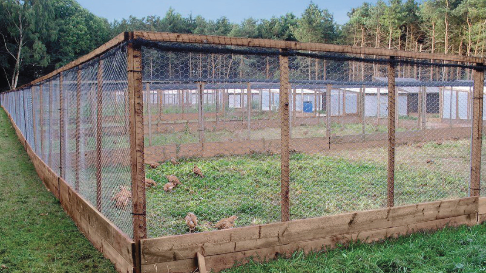

grass or other dry litter should be placed in the nests;
(d) Protect mother hens with their young chicks against predators, rain, coldness and wind by providing a box or shelter made of blocks on the ground; and
(e) Ensure that unproductive and old laying birds together with extra male birds should be culled.
Semi-intensive system of poultry production
In this system, birds are partly reared in houses and partly in fenced areas. When it is practised in a permanent area, there should be a poultry house(s) followed by a run. At night, birds are confined to houses and during the day, they are given access to runs. The houses should be stationary and runs have to be fenced with wire mesh or any other suitable fencing materials that are locally available.
The runs have to be planted or provided with suitable forage to supply birds with green forage. Fencing of the runs may also be designed in a way that allows rotational runs especially when forage is grown inside the run. In this system, one hectare is estimated to accommodate an average rate of 750 birds. With this system, scientific management operations can be applied to a certain extent and there is more economical use of land compared to a free-range system. However, there is a high cost for fencing and the need for routine cleaning and removal of litter materials from the run. Figure 9.3 shows an example of a poultry house and run.
